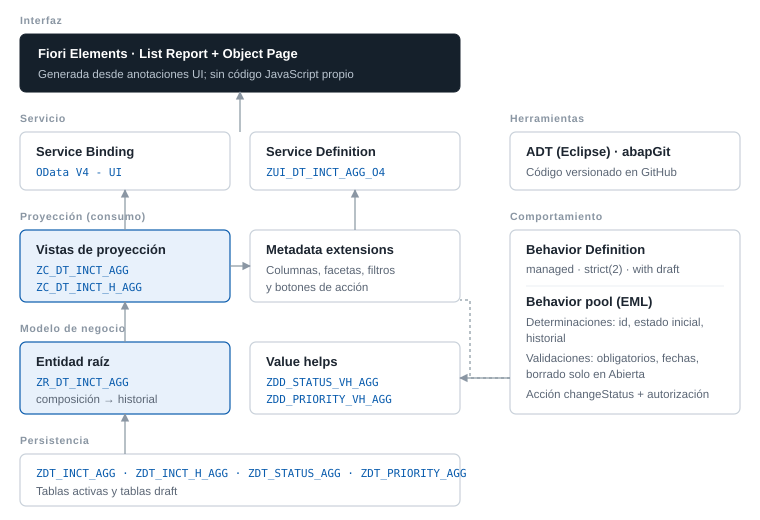

SAP ABAP · ABAP Cloud · RAP · S/4HANA
Herramientas gratuitas para el día a día de un desarrollador ABAP.
Analiza tu código para ECC, S/4HANA o ABAP Cloud, entiende un dump de la ST22, convierte Open SQL antiguo, genera un BO RAP o un report ALV y descarga una biblioteca de clases ABAP. Todo funciona en tu navegador y el código no sale de tu ordenador.
Herramientas
Para los problemas que aparecen cada semana
Gratis, sin registro y sin instalar nada.
CleanCore Check
Elige tu sistema (ECC, S/4HANA on-premise, Private o Public Edition, BTP) y descubre qué no compila, qué se rompe al migrar, qué es lento y qué es inseguro.
Abrir →Explicador de dumps ST22
Pega el dump y entiende qué ha pasado, por qué suele pasar y cómo se corrige en código.
Abrir →Conversor a sintaxis estricta
Tus SELECT antiguos con @, comas y FIELDS, listos para ABAP Cloud, con avisos de rendimiento.
Abrir →RAP, ALV, tests y excepciones
BO RAP con draft, report ALV completo, esqueleto de tests ABAP Unit, clase de excepción T100 y tipos desde JSON.
Abrir →Referencia ABAP
Transacciones, funciones y BAPIs con su sustituto en ABAP Cloud, y tablas con su vista CDS liberada.
Abrir →Formateador y fechas
Pretty Printer en el navegador y conversor de timestamps, DATS y zonas horarias con su código ABAP.
Abrir →Ejemplo real de trabajo
De un report de 2009 a ABAP Cloud, en cuatro pasos
Un listado de pedidos de compra como los que hay en casi todos los sistemas. Desplázate para ver cómo cambia el mismo código.
Tabla con cabecera, SELECT dentro del bucle y SELECT *
Funciona, pero con 5.000 posiciones lanza más de 10.000 consultas a la base de datos. Y no compila en ABAP Cloud: tabla con cabecera, TABLES y acceso directo a EKKO, EKPO, LFA1 y MAKT.
Declaraciones en línea, SQL estricto y lectura en bloque
Las consultas se hacen antes del bucle y los nombres se buscan en una tabla HASHED. Mismo resultado, una fracción del tiempo. Es el paso que se puede dar en cualquier ECC con 7.40 o superior.
Una sola consulta con JOIN
HANA resuelve el cruce de pedidos, proveedores y textos en una única SELECT. El bucle de ABAP desaparece. En S/4HANA on-premise ya no hay nada que corregir; para ABAP Cloud solo queda un problema: siguen siendo tablas de SAP.
Vista CDS sobre APIs liberadas
En lugar de leer tablas de SAP, la vista se apoya en I_PurchaseOrderItemAPI01 e I_Supplier, que SAP se compromete a mantener estables. Con anotaciones UI se convierte en una app Fiori sin escribir pantalla.
Proyecto destacado
Gestión de Incidencias con RAP
Proyecto final del Máster ABAP Cloud de Avanzado a Experto. Una aplicación Fiori completa para registrar incidencias, asignarlas y seguir su historial de estados, construida con el modelo RAP gestionado y draft.
- Modelo
- Entidad raíz con composición al historial
- Comportamiento
- managed, strict(2), with draft, ETag
- Lógica
- 2 determinaciones, 3 validaciones, acción con parámetro
- Reglas
- Transiciones de estado controladas y autorización por responsable
- Interfaz
- Fiori Elements sobre OData V4
- Código
- Versionado con abapGit en GitHub

ABAP Toolkit · descarga gratuita
Clases que no tendrías que escribir otra vez
Application log, email, cliente REST, JSON, Excel, Application Jobs, mensajes RAP, ALV, BAPIs, textos largos y una plantilla de BO RAP completa. Código abierto (MIT). Un paquete para ABAP Cloud y otro para ECC y S/4HANA on-premise, instalables con abapGit.
- 20 objetos documentados, con ejemplos de uso en la cabecera
- Solo APIs liberadas en el paquete Cloud
- Tests unitarios incluidos
DATA(lo_log) = zcl_abk_log=>create(
iv_object = 'ZPURCHASE'
iv_subobject = 'IMPORT' ).
TRY.
DATA(ls_resp) = zcl_abk_http=>for_comm_arrangement(
iv_scenario = 'Z_SUPPLIER_API'
iv_service = 'Z_SUPPLIER_REST' )->get( ).
lo_log->info( |HTTP { ls_resp-status }| ).
CATCH cx_web_http_client_error cx_http_dest_provider_error INTO DATA(lx).
lo_log->exception( lx ).
ENDTRY.
lo_log->save( ).Blog técnico
Artículos
El SELECT dentro del LOOP: cómo encontrarlo y tres formas de quitarlo
FOR ALL ENTRIES, JOIN y vistas CDS, con lo que gana cada una y cuándo no merece la pena.
Clean core explicado para desarrolladores ABAP
Qué cambia en el día a día: objetos liberados, niveles de extensibilidad y qué hacer con el código Z existente.
RAP: validaciones, determinaciones y acciones sin sorpresas
Cuándo se ejecuta cada una, cómo marcar el campo erróneo en Fiori y el error de la numeración con MAX + 1.
Formación
Certificaciones
Máster SAP ABAP Cloud: de Avanzado a Experto
Logali Group · junio 2026
POO, CDS avanzado, RAP, EML, extensibilidad S/4HANA Cloud y Private Edition, side-by-side.
Máster SAP ABAP Cloud I: de cero a avanzado
Logali Group · enero 2026
Lenguaje, tablas internas, diccionario, ABAP SQL, push-down, ATC y abapGit.
SAP ABAP: iniciación a la programación
Logali Group · enero 2026
Fundamentos del lenguaje y del entorno de desarrollo.
¿Tienes un programa Z a medio migrar?
Pégalo en CleanCore Check, elige tu sistema y en un segundo sabrás qué tocar. Gratis y sin que el código salga de tu ordenador.